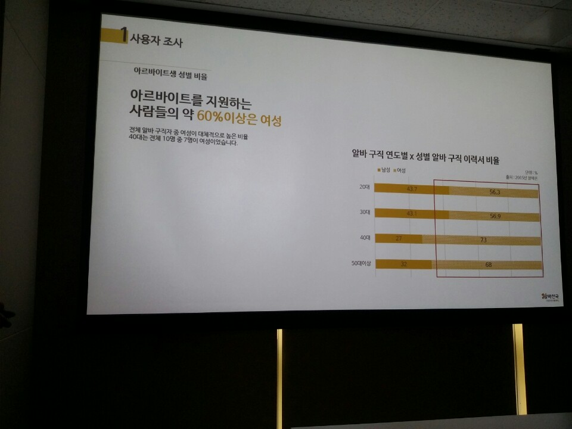
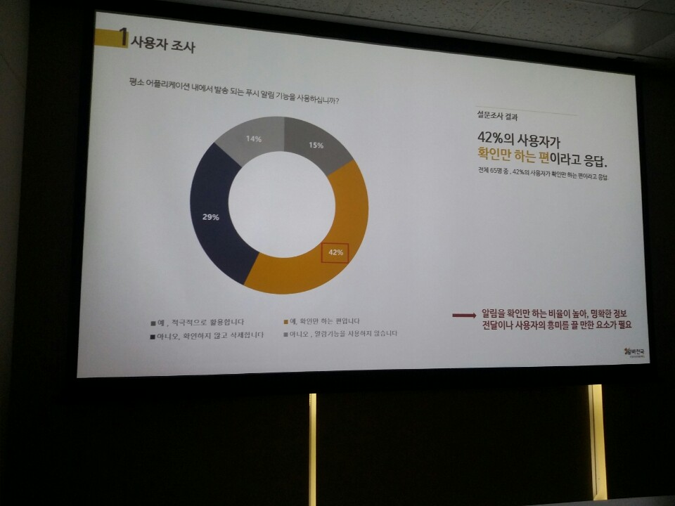
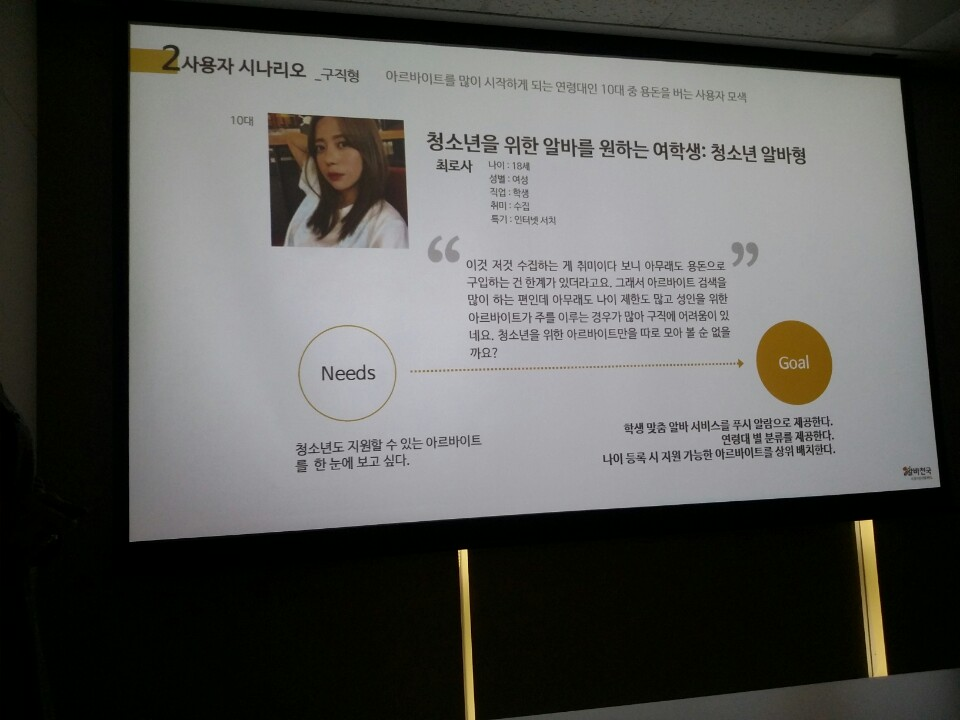
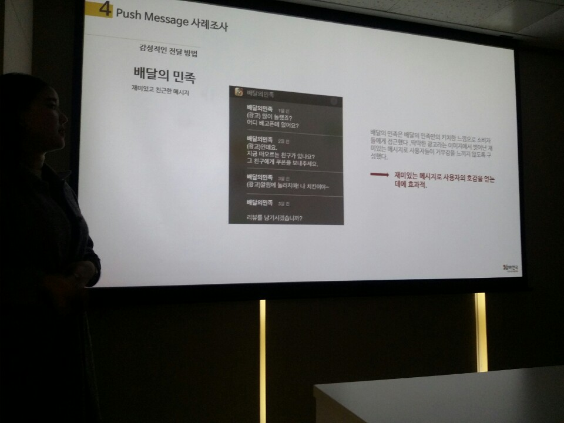

캡스톤 디자인 주간 보고서 [5주차]
| 팀 명 | 11팀 |
|---|---|
| 과제명 | 알바천국 감성 푸쉬 서비스 기획 |
| 회의날짜 | 2016년 9월 27일 ( 09:30 ) ~ 2016년 9월 27일 ( 11:00 ) |
| 참석자 | 성명 | 역할 | 서명 |
|---|---|---|---|
| 안가은 | 회의록 작성, 팀장 | ||
| 김윤신 | 기획 | ||
| 박채원 | 기획 | ||
| 조영지 | 기획 |
| 주간 보고 내용(한주의 내용을 간단하게 정리) |
|---|
 미디어 윌의 알바천국 회사를 방문하였습니다.     알바천국 마케팅 팀, 기획 팀의 팀장, 대리님을 만나 그동안 리서치한 자료를 발표하는 시간을 가졌습니다. 발표 후 팀장님께 앞으로 저희 팀이 알바천국과 협업하여 나아갈 전체적인 방향 및 컨셉에 대한 설명을 들었습니다. 개인화에 최적화 되어가는 모바일 트렌드에 맞춰 알바천국 기획 팀에서 기획중인 사용성 개선을 위한 리뉴얼 컨셉 문서를 보고, 수정된 UX에 대한 검토를 저희 팀에서 하기로 하였습니다. 또 UX Design과 인터랙션을 테스트해 볼 수 있는 UXPin 계정을 생성, 구매하여 프로젝트에서 사용하기로 하였습니다. |
| 다음 진행 방향 및 계획 |
|---|
|
알바천국 리뉴얼 앱의 UX를 검토한다. UXPin의 스터디 및 테스트를 진행한다. |
* 주차별 주간 보고서를 필히 제출